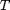

Interpolation of scattered data in 4 dimensions
Contents
Introduction
Scattered data consists of a set of points X and corresponding values V, where the points have no structure or order between their relative locations. There are various approaches to interpolating scattered data. One widely used approach uses a Delaunay triangulation of the points. In this example a single-valued multivariate function is defined over random scattered 4D data. Then the value of the function is found at an intermediate requested point through interpolation between its values at neighboring points. The function involves an analytic formula so that the interpolation result can be checked directly by evaluating the function at the requested point. Note that the number of required scattered points increases in higher dimensions, in order to maintain the accuracy of the interpolated value.
Initial data
Set the random number generator.
rng(1);
Set the dimension of the problem.
d=4;
Set the unit 4D cube vertices over which the function is defined.
ends=[0 1]; points1=zeros(2^d,d); for i=0:d-1 rep=repmat(ends,2^(d-i-1),2^i); points1(:,i+1)=rep(:); end points1=10*points1-5+0.001*rand(size(points1));
Set the scattered random 4D data over which the function is defined.
points2=round(1000*rand(100,d))/100-5;
Assemble
points=[points1;points2];
Set the function values.
fval=sum(points.^2,2);
Set the query point.
pquery=10*rand(1,d)-5;
Processing
Find the Delaunay triangulation of the 4D scattered data.
T=delaunay_nd(points);
Find the vertices of the simplex the query point lies in. For this purpose, find the barycentric coordinates of the query point with respect to each simplex of the Delaunay triangulation . If all of the barycentric coordinates are larger than 0 for a given simplex, then this simplex contains the query point and the loop is terminated.
for i=1:size(T,1) psimplex=points(T(i,:),:); pdiff=psimplex-psimplex(ones(d+1,1),:); pointdiff=pquery-psimplex(1,:); st=pdiff(2:d+1,:)'\pointdiff'; barcoords=zeros(d+1,1); barcoords(1,:)=1-sum(st); barcoords(2:d+1,:)=st; if all(barcoords>0) interp_simplex=i; interp_barcoords=barcoords; break; end end
Approximate the value of the function at the query point through linear interpolation of the function values at the vertices of the simplex containing the query point.
appr_fval=fval(T(interp_simplex,:))'*interp_barcoords;
Verification
Calculate the value of the function at the query point through its analytical formula.
exact_fval=sum(pquery.^2);
Find the relative error due to the interpolation.
rel_err=(appr_fval-exact_fval)/exact_fval
rel_err =
0.5297
Contact author
(c) 2014 by George Papazafeiropoulos First Lieutenant, Infrastructure Engineer, Hellenic Air Force Civil Engineer, M.Sc., Ph.D. candidate, NTUA
Email: gpapazafeiropoulos@yahoo.gr
Website: http://users.ntua.gr/gpapazaf/